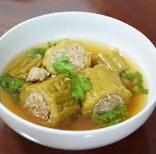
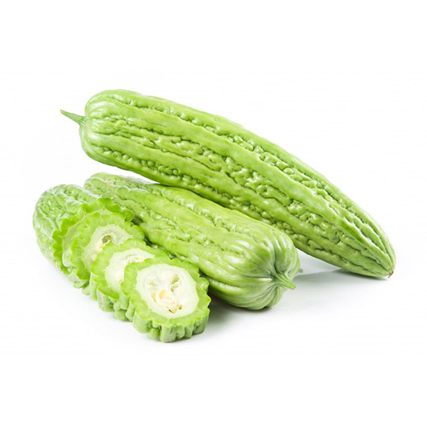
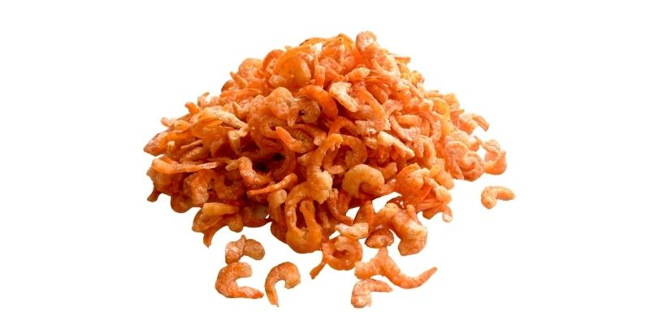
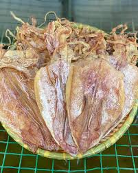

Bitter Melon Soup
ស្ងោរម្រះ
Bitter Melon Soup is a traditional Khmer dish made with stuffed bitter melon, minced pork, and clear broth. It has a slightly bitter taste balanced with savory flavors, making it both healthy and comforting.
Calories
600 kcal (200 kcal per serving)

Bitter Melon

2–3 pieces
Buy NowMinced Pork
300g
Buy NowGlass Noodles
50g
Buy NowDried Shrimp

4-5 pieces
Buy NowDried Stingray

1-2 pieces
Buy NowGarlic

3 cloves
Buy NowShallots

2 small
Buy NowFish Sauce

2 tbsp
Buy NowSoy Sauce

1 tbsp
Buy NowSugar

1 tbsp
Buy NowBlack Pepper

1 tsp
Buy NowWater

1 liter
Buy NowSpring Onion

2 stalks
Buy Now-
Step 1: Prepare bitter melon
- Cut bitter melon into sections
- Remove seeds from the center
- Set aside
-
Step 2: Prepare stuffing
- Mix minced pork with soaked glass noodles
- Add dried shrimp, dried stingray, garlic, shallots, fish sauce, and pepper
- Mix well
-
Step 3: Stuff bitter melon
- Fill each bitter melon piece with pork mixture
- Press gently to hold shape
-
Step 4: Boil soup
- Bring water to a boil
- Add stuffed bitter melon
-
Step 5: Season
- Add fish sauce, sugar and soy sauce
- Simmer for 25–30 minutes
-
Step 6: Finish
- Add spring onion
- Taste and adjust seasoning
-
Step 7: Serve
- Serve hot with rice